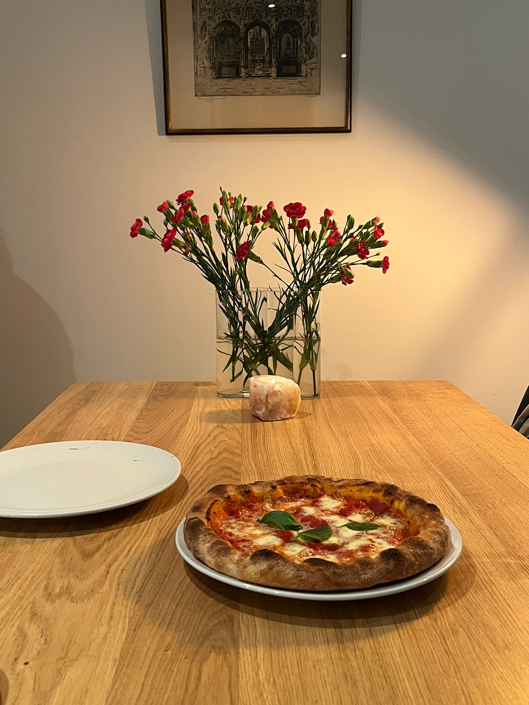
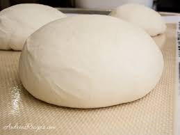

Italian recipe pizza
Home

Description
Pizza Margherita is one of the simplest and most
iconic Italian dishes, known for its light,
fresh flavors and beautiful colors that represent the Italian flag.
Made with just a few high quality ingredients tomatoes, mozzarella, basil,
and olive oil it shows how delicious something can be when the ingredients are allowed to shine.
Its origins trace back to Naples, where it became
a symbol of Italian culinary tradition. The combination
of a crispy yet tender crust, creamy mozzarella,
and fragrant basil makes it a timeless classic.
Whether cooked in a wood fired oven or a home oven,
Pizza Margherita remains a favorite for its perfect balance of flavor and
simplicity.
Ingredients
4 people
- Water 410 ml
- Caputo Nuvola flour 650 g
- Dry yeast 3 g
- Oil 10 ml
- Salt 18 g
Steps
- Dissolve the yeast in a bowl with cold water (about 5°C, straight from the fridge).
- Once the yeast is fully dissolved and no lumps remain, slowly begin adding the flour while stirring continuously.
- When the dough becomes firm and harder to mix, let it rest for 15 minutes at room temperature.
- After 15 minutes, add the salt and the oil. The oil will help the salt incorporate more easily.
- Knead the dough until it becomes smooth, soft, and elastic.

- Place it in a bowl and cover it with plastic. Lastly,let it rest in the fridge for about 20 hours.